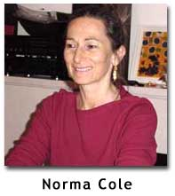

|
for Susan Gevirtz's CAESAREA: Herod's City
by Norma Cole
This
paper was presented at the “Strange Models” Panel, Second Sunday Series,
“I speak not, I trace not, I breathe not thy name” begins a section from Byron’s “Stanzas for Music.” This is the one part from the Hebrew Melodies that he suppressed, allowing the other poems to be set to music by Isaac Nathan. This strange model, the model of absence, stands behind Susan Gevirtz’s CAESAREA: Herod’s City as metamodel, containing and generating a structure of strange models. It silently introduces and permits, “like the night,” the many intersecting and merging arms or armatures (the woman’s hundred arms”—Thrall, Gevirtz) that create the multiple rhythms, tones and trajectories of Gevirtz’s long poem. One of Byron’s Hebrew Melodies, “Herod’s Lament for Mariamne,” is cited in the transitional passage or threshold between the title on the title page, C A E S A R E A : . : Herod’s City and the title “C A E S A R E A : . : Herod’s City” at the top of page 29 where the body/text of the poem begins—or continues, depending on where you think it starts. About the Hebrew Melodies, poems written at the request of composer Isaac Nathan, Byron writes to Annabella, his fiancée, that his words would be accompanied by the “real old undisputed Hebrew melodies which are beautiful and to which David & the prophets actually sang the ‘songs of Zion.’ It is odd enough that this should fall to my lot, who have been abused as ‘an infidel.’ Augusta says ‘they will call you a Jew next”(Benita Eisler). “I speak not… thy name”—Augusta—the referent of that sign or name’s sake was Byron’s beloved, his half-sister whose shadow haunts the Hebrew Melodies. The suppressed poem from “Stanzas for Music” might be called “Stanzas Forbidden” just as Gevirtz’s CAESAREA :.: Herod’s City might be called “Stanzas Standing in for a Crime.” Behind and before CAESAREA are crimes including the murder committed in name of inevitability, stand-in for the suppressed model of the forbidden-to-be-called-by-its-name, in this case beloved, or what Laura Riding in her Lives of Wives refers to as “The Silence of Mariamne.” The written inscription in my copy of CAESAREA says “to which we reply / and we do.” The poem CAESAREA will dismantle the strangely conventional model of power represented by this fabulously constructed harbor. On the eastern shore of Mare Nostrum, the Mediterranean Sea, “… he lowered blocks of limestone [in a different translation, “soft white stone”] into twenty fathoms [in another account, twenty-five fathoms] of water, most of them measuring fifty feet in length by nine in depth and ten in breadth, some being even bigger”(Josephus). This he is Herod, King of the Jews and the husband and murderer of Mariamne and the subject of Byron’s poem. The harbor of Caesarea, named for Augustus Caesar who ceded much territory to Herod in gratitude for his support, was the more ancient site of Strato’s Tower, between Joppa and Dora. It became an international entrepôt in the tradition or model of Delos and Rhodes, Carthage, Alexandria, Troy, Aden, Palmyra, Petra, Bactria, Oc Eo, Peshawar, and the market town at the mouth of the Ganges. As such, it becomes a model of punctuation, a control of passage, promise of shelter and a site of circulation – of goods, winds, breath, song, stanzas: for music. What music are the stanzas for? “Tell her // when you go there // what you saw here / Her // Sayarea,” a model of both motion and musical progression, from “here” to “her,” from “Sayarea” to “Sayarena,” from “Caesarea” to “cease” and “area” and “arena,” the arena where interdictions are broken and many thousands in revolt are massacred before an audience: a spatial model and a temporal model which still exists in what is now known as Israel, there on the seacoast, here as a bite out of the desert and sea of the page. The poem itself becomes a strange “speech act” model, says “Tale,” says “Tale within tale.” It disrupts itself with strange speechless acts of dots, architectural models of the very port over whose breakwater speech breaks, the colon-period-colon combination in the title forming the symmetrical yet asymmetrical arms of the harbor. Here is the Muse of Symmetry, the first poem in Laura Moriarty’s book titled Symmetry, an acute consideration of the asymmetry from which a model of symmetry is constructed or implied. THE MUSE The familiar paraphernalia Forced into the role of silent collaborator The psyche at stake We are in business together The buildings melt into the sky You sing to distract me Your reason is not mine Is mine The submerged foundational stone blocks reappear like the black basalt rocks forming Robert Smithson’s Spiral Jetty, their salt-encrusted angles barely breaking the surface of the Great Salt Lake. The “tale within tale” here is broken up and punctuated by square sets of dots, a rippling grid of “Memories/ before our time.” Something is to something as something is to something else. This figure becomes a sign in the text, its function recalling the diamond dot figures of Langston Hughes’s poem “Neon Signs”: WONDER
BAR . .
. . MONTEREY . .
. . MINTON’S (ancient
altar of Thelonius) . .
. . MANDALAY Spots
where the booted and
unbooted play . .
. . SMALL’S . .
. . CASBAH . .
. . SHALIMAR . .
. . Mirror-go-round where
a broken glass in
the early bright smears
re-bop sound . .
. . “It begins / as usual / with a journey / in a new / handed over / panegyric / litany without altar.” Gevirtz quotes Mary Shelley folding in the carmen figuratum of George Herbert’s altar-object, another implication of the strange model of “the unknown known” of the poem. And then “the fallen angle”—of the house in Samaria where Herod and Mariamne passed the blissful and early moment of their union? Looking back as they left, they saw the angles of this house fall as the floor caved in. According to Laura Riding in The Lives of Wives, Mariamne read this as a sign. “The fallen angle.” Is angle not angel? The strange—or not at all strange—model that suddenly appears (sails into port?) is the Talmudic Haggadic reading of consonants, the reading less strange to us for its having been favored by poets such as Robert Duncan, philosophers such as Emmanuel Levinas and Jacques Derrida. This is the poetic model, inseparable from Haggadic derashot (explanations) containing figurative or folded meanings, parabolic or hyperbolic. This is the model of no authority (Rabbi Leo Jung) that grants permission to contradiction, or as CAESAREA says,
“The angel would like to stay, awaken the dead, and make whole what has been smashed. But a storm is blowing from Paradise; it has got caught in his wings with such violence that the angel can no longer close them….This storm is what we call progress”(Walter Benjamin on Paul Klee’s Angelus Novus). “And in his angels he found folly.” (Job 4.18) Byron and Augusta reappear at intervals in the agora of dots, “this axial relation / incident between edited space / and expanse,” “exposition invisible / at ancient inkwells / the found, lingers.” Haggadah is a mnemotechnical device, a table of argument, a folklore compendium, and an unknown known for Byron, himself fascinated by “surviving evidence of ancient popular culture, whether the chants of Suliote sailors or ‘real undisputed songs of Zion.’ He felt particularly inspired by ‘remains’ that gave voice to despised or forgotten peoples.” (Benita Eisler) CAESAREA appears to be rhapsody, from rhapsode, stitcher of song. The term migrated from poetry to music in the early nineteenth century, was applied to compositions drawing on folk melodies, and evolved through the work of Brahms and others into new forms of memory and investigation In her critical book Narrative’s Journey: The Fiction and Film Writing of Dorothy Richardson, Gevirtz writes, “In Pilgrimage, we do and do not meet a main character named Miriam Henderson—she is there when we meet ourselves in the act of reading and so she is never actually there without us.” Gevirtz quotes Stephen Heath: “‘Miriam’ is the possibility of ‘mirror I am.’” Miriam and Mariamne are the same name, “…the basic name known to the Chaldeans as Marratu, to the Jews as Marah, to the Persians as Mariham, to the Christians as Mary: as well as Marian, Miriam, Mariamne, Myrrhine, Myrtea, Myrrha, Maria and Marina. Her blue robe and pearl necklace were classic symbols of the sea, edged with pearly foam”(Barbara Walker). Constellated in Gevirtz’s writing, they become mystery tale model—or role model. “A sign is anything which is related to a second thing”(Charles S. Peirce). Here is a sign that is the second thing, for the radical for this name is etymologically the same as the root for marriage, the Latin maritare, union under the auspices of the Goddess Aphrodite-Mari. Origen, the second century self-castrated Christian father whose library was housed at Caesarea, declared of marriage, “Matrimony is impure and unholy, a means of sexual passion.” From CAESAREA: Herod’s City, pp 43-44:
On page 49:
These two lines of exactly equal and unequal length provide a warning that models such as the safety of the harbor, of closure, are not what they seem. Bio: Norma Cole is a poet, painter and translator. Her most recent poetry publications are The Vulgar Tongue, Desire & Its Double and Spinoza in Her Youth. Current translation work includes Anne Portugal’s Nude, Crosscut Universe: Writing on Writing from France (edited and translated by Cole) and The Spirit God and the Properties of Nitrogen by Fouad Gabriel Naffah. Cole has received a Wallace Alexander Gerbode Foundation Award, Gertrude Stein Awards, the Robert D. Richardson Non-Fiction Award as well as awards from The Fund for Poetry. A Canadian by birth, Cole migrated via France to San Francisco where she has lived for over twenty years. go to this issue's table of contents
|
|||||||||||